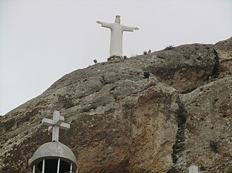
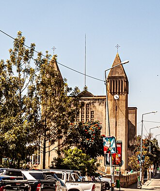
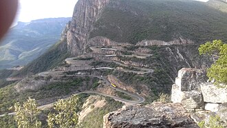
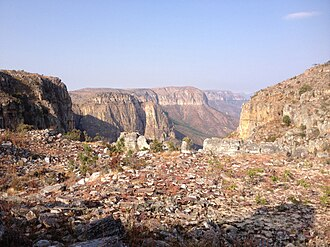
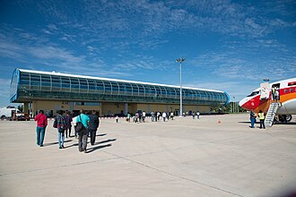

O que fazer no Lubango e na Huíla
20 lugares na província da Huíla, a maioria no Lubango.
Na página de cada lugar: horário, preço em Kwanza (quando conhecido), como chegar, as fontes e a data de verificação. Horários e preços mudam: confirme antes de ir.
Cultura e monumentos
-

Cristo Rei do Lubango
Estátua de 1957 e miradouro sobre o Lubango.
Foto: Mehrdad Sarhangi · CC BY 3.0
-



Museus
-
Museu Regional da Huíla
As culturas dos povos do sul de Angola.
Natureza
-

-

Fenda da Tundavala
Precipício de 1200 m com vista até à planície do Namibe.
Foto: tim kubacki · CC BY 2.0


Restaurantes
-
Restaurante Katedral
Carnes grelhadas junto à Sé.
-
Restaurante Medara (Nuno Batata)
Grelhados portugueses e angolanos.
-
Churrascaria Pita Aqui
Churrasco na Marginal do Mukufi.
-
Art Doce
Café e comida rápida no centro.
Bares
-
Zavula Terrace (Hotel VIP Huíla)
Esplanada de hotel com jazz ao vivo.
-
Bar Metrópole
Bar no Lubango.
Alojamento
-
Hotel Serra da Chela
160 quartos, piscinas e restaurante no Lubango.
-
Pululukwa Resort
Resort com parque de animais e restaurante.
Centros comerciais
-
Millennium Shopping Center (Lubango)
O centro comercial do Lubango.
-
Shoprite Lubango
Supermercado para as compras do dia a dia.
Desporto
-
Estádio Nacional da Tundavala
Estádio do CAN 2010.
-
Ginásio Rock-Star Fitness
Ginásio no centro do Lubango.
-
Sporting Club do Lubango
Clube desportivo no Lubango.
Câmbio
-
Euro-Dólar (casa de câmbio)
Câmbio de moeda no Lubango.
Transportes
-

Aeroporto do Lubango (Mukanka)
Voos da TAAG entre Lubango e Luanda.
Foto: Marcos Lana · CC BY-SA 2.0

Mais guias
- Agenda de eventos
- O que fazer em Luanda
- Restaurantes, bares e discotecas em Luanda
- Centros comerciais em Luanda
- Desporto e ginásios em Luanda
- O que fazer em Benguela e no Lobito
- O que fazer no Huambo
- O que fazer em Cabinda
- O que fazer no Namibe (Moçâmedes)
- O que fazer em Malanje
- Praias de Angola
- Parques nacionais de Angola
- Natureza e paisagens de Angola
- Museus de Angola
- Hotéis e alojamento em Angola
- Transportes em Angola: aeroportos, comboios e autocarros
- Casas de câmbio em Angola
Things to do in Lubango and Huíla
20 places in Huíla province, most of them in Lubango. Each place page has opening hours, prices in Kwanza and directions. The Tuende app is available in Portuguese, English, French and Spanish.